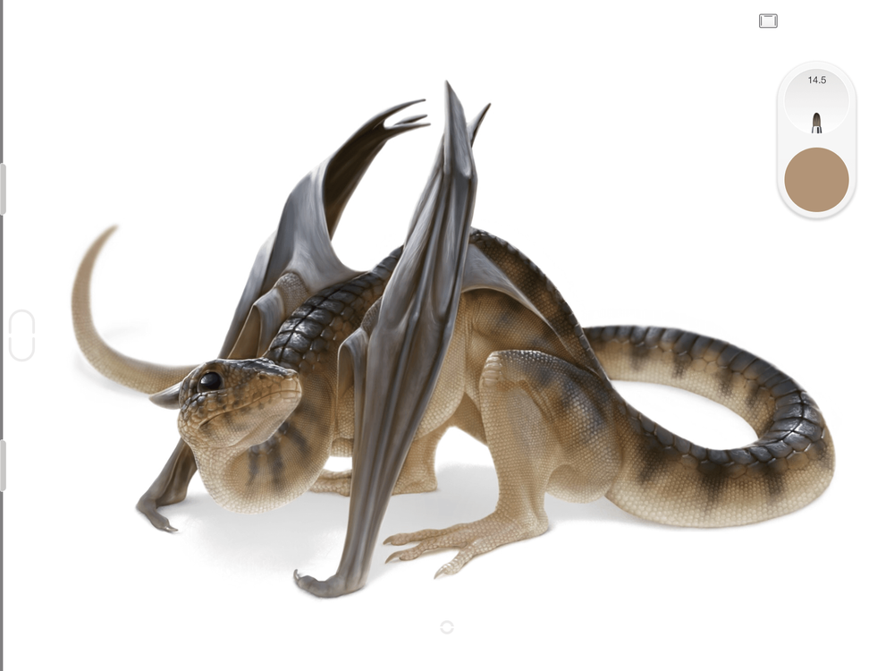

手机画画也能很专业？Sketchbook 从装上去到画出第一张像样作品
第一次拿起手机画画的新手友好指南——五分钟装完、画第一笔、开图层、找笔刷，常见坑一并说清。
这篇能带你从完全不懂手机绘画到用 Sketchbook 画出第一张像样的作品，不需要任何画画基础，甚至不需要会拿笔。
它到底是干嘛的？一个生活化类比讲明白
你可以把 Sketchbook 理解成"你手机里的一间美术工作室"。以前想画画得买纸、削铅笔、挑颜料、铺画布，现在点开应用就能开始——素描铅笔、马克笔、水彩、喷枪都在工具栏里，画错了直接撤销，线稿、上色、阴影分在不同图层上互不干扰，画完一键导出。
和那些主打"涂鸦表情包"的轻量级应用不一样，Sketchbook 从 Autodesk 时代起就是给专业插画师用的工具，后来独立出来做移动端，底子是专业的，但界面做得足够简单，新手不会一上来就被几百个选项吓跑。想了解完整功能清单，可以去sketchbook官网看看。免费版包含完整的基础作画链路，够你玩很久。

五分钟上手：从装上去到画完第一笔
第一步：下载安装
想要sketchbook下载，手机应用商店搜 "Sketchbook" 就行，认准那个蓝底白 S 图标的。装完打开不会强制你登录，直接就能进画布。
第二步：新建一张画布
打开应用默认就是一张空白画布，你也可以点左上角菜单选"新建"——这里会给你一些常用尺寸预设，比如 A4、明信片大小，或者直接填像素数。新手先别纠结尺寸，默认就够用。
第三步：认识工具栏
屏幕左边是笔刷栏，右边是颜色和图层。笔刷栏从上往下依次是：当前笔刷、常用笔刷（可以钉在这）、笔刷库入口。颜色栏点一下就能取色，色轮、色板都能切。
第四步：画第一笔
点左边笔刷图标，选"铅笔"（默认第一个就是），手指或触控笔直接在画布上划就行。如果是平板配触控笔，Sketchbook 能感应笔的压力——用力画线条粗，轻画线条细，和真实笔几乎一样。
第五步：撤销、换笔、存图
画错了？双指轻点屏幕撤销，三指轻点重做。想换笔？左边栏直接点。画完要存？点左上角菜单选"导出"，存成本地相册或 PNG 文件都可以。

上手后先玩这三个功能
画第一笔只是开始。Sketchbook 真正好用的地方在下面这三个功能——新手第一天就应该摸熟。
图层：你会发现"画错了不用擦整张"
这是从"涂鸦"到"创作"的分水岭。
什么是图层？想象你在一张透明塑料片上画线稿，再叠一张透明片上底色，再叠一张画阴影——每张片都能单独移动、删除、调整透明度，互不影响。Sketchbook 里每一层就是这样一张透明片。
为什么要用图层？举个例子：你用铅笔勾了一只猫的线稿，然后新建一个图层上色。如果上色出了界，只需要删掉上色那层，线稿纹丝不动。反过来想，如果线稿画歪了，删掉线稿层重画，之前上好的颜色也不会白费。
你会看到的操作：打开右边图层面板（默认是一个叠起来的方形图标），点"+"号新建一层，手指长按某一层可以拖动排序、点眼睛图标隐藏、点垃圾桶删除。
稳态笔迹：长曲线一下子就稳了
新手最头疼的就是画不直——想画一条平滑的曲线，手指一抖就歪歪扭扭。这时候试试稳态笔迹（Steady Stroke）。
开启方法：左上角菜单 → 偏好设置 → 把"稳态笔迹"打开。开启后，你下笔的位置和实际线条之间会有一小段"拖拽距离"，就像有个缓冲，手抖也不会传达到线条上。
这意味着什么？画头发丝、画建筑物轮廓、画漫画分镜里的速度线，你会发现线条顺了很多，不用反复擦了。
界面自动隐藏：画画的时候画布永远最大
落笔的那一刻，工具栏和面板会自动淡出，只剩下纯净的画布。抬笔回来，界面又自动出现。
这个小细节不显眼，但体验差别很大——它让你的注意力完全集中在画面上，不会被 UI 元素干扰。如果默认没开，进偏好设置手动打开就行。更多这类设置项的详细说明，可以翻一下sketchbook文档。
小白的三个常见疑问
Q1：为什么我画的线条颜色这么淡？
大概率是笔刷不透明度太低了。检查左边笔刷栏，选了某个笔刷之后通常有个不透明度滑块——拉到 100% 就是实色了。另外确认你画的图层上面有没有其他半透明图层挡着。
Q2：导出的图片发糊怎么办？
两个常见原因：一是新建画布时像素尺寸太小，比如只有几百乘几百像素，放大了当然糊；二是导出时选了 JPEG 压缩质量太低。新建画布时尽量选大一点的尺寸（比如 2000×3000 以上），导出时选 PNG 格式就不会糊。
Q3：免费版够用吗，要不要花钱？
够。免费版包含完整的笔刷、图层、填色、导出链路，日常画画完全没问题。付费的高级捆绑包主要多了批量导出 PDF、导入自定义笔刷集、剪贴蒙版这些进阶功能——等你真的需要了再考虑也不迟。如果只是想试试手，免费版先玩两周再说。
画画这件事，最难的永远不是软件，是迈出第一步。你现在已经拿起手机打开了 Sketchbook，比还在观望的人多了一万条路。
想进阶的话，下一个可以试试"自由对称"——画一些对称图案、花纹特别省事，对称轴不再锁死在水平竖直，任意角度都能镜像。画多了之后，再考虑要不要升级到高级捆绑包解锁更多笔刷和图层功能。
Sketchbook 这套工具从 Autodesk 时代积累下来的功底扎实，移动端的体验也打磨得越来越顺。从第一笔涂鸦到完整作品，需要的不是更好的软件，是每天多画五分钟。